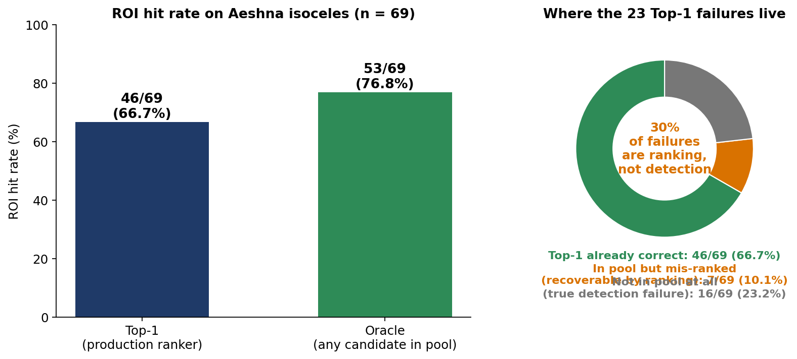
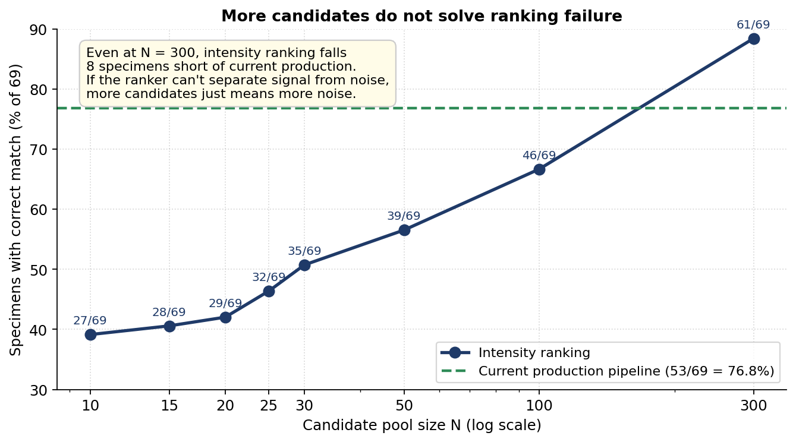
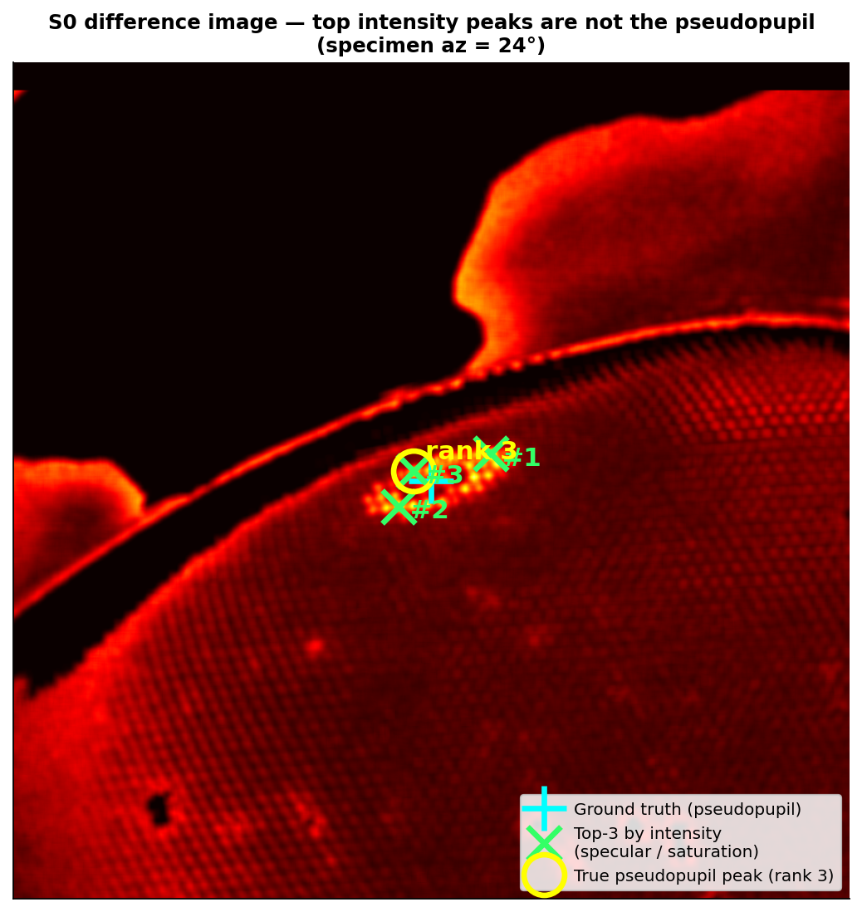
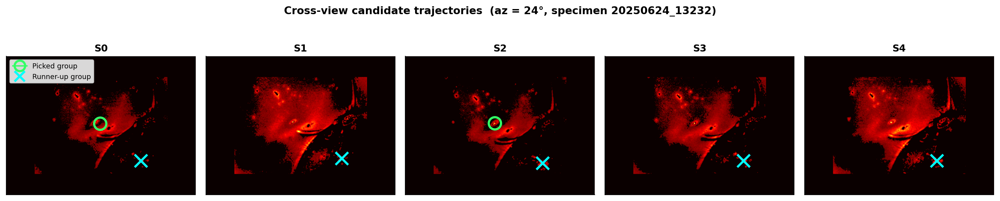
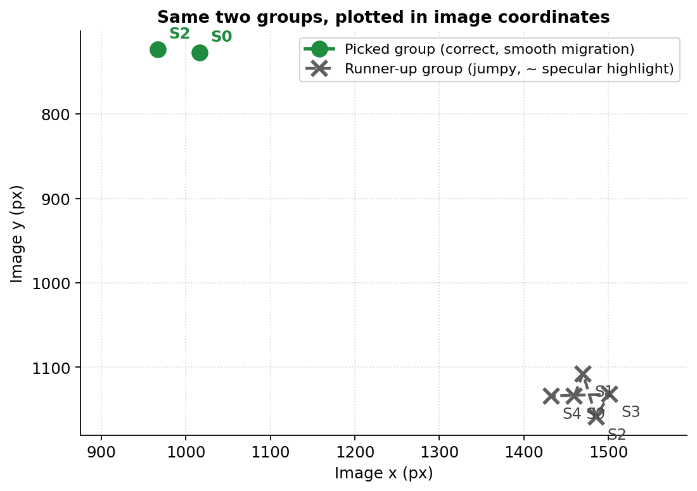
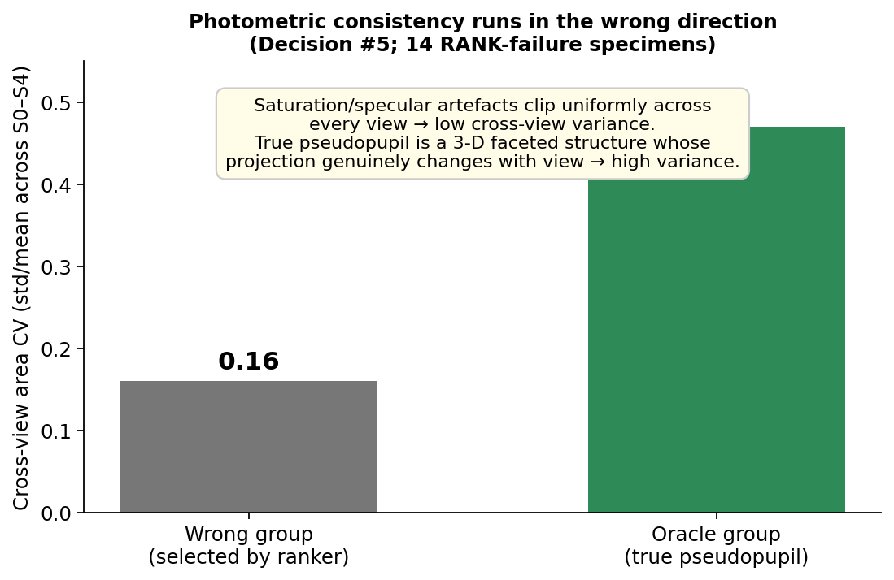

The puzzle
Out of every 10 specimens my pseudopupil pipeline got wrong, 3 had the right answer already in hand and threw it away. This post is about those three: cases where the failure isn’t detection but selection, and where every “obvious” fix made things worse.
The setup, briefly. Pseudopupil detection on insect compound eyes is, on paper, a small-blob detection problem. Each specimen is photographed from five viewing angles (S0–S4) under two illumination conditions; the difference image highlights a small dark structure that marks where the eye is looking back at the camera. The standard pipeline is threshold → connected components → score the candidates → pick the best. I built that. On 69 Aeshna isoceles specimens it gets the right region 67 % of the time.
Then I ran the diagnostic that produced the figure below. For every specimen, instead of looking at the top-1 candidate, look at the entire pool the matcher returned, and ask: was any candidate close to the ground truth? That’s the oracle.

The oracle gets 53 / 69. The production top-1 gets 46 / 69. Of the 23 failures, 7 — almost a third — are pure ranking failures. The candidate is there. We just don’t pick it.
Why more candidates don’t help
The first instinct here is to enlarge the candidate pool. If the ranker can’t reliably find the right blob in a pool of 10, surely it can find it in a pool of 100. So I built a peak-based candidate generator with intensity ranking and swept N:

The curve creeps up but never catches the production pipeline. At N = 10 we get 27 / 69; at N = 100, 46; at N = 300, 61 — still 8 specimens short. The asymptote is below the bar we already have.
If the ranker can’t separate signal from structured noise, more candidates just gives it more noise to sort through. This isn’t a parameter problem. It’s a feature-space problem.
What I tried
Three families of single-blob, single-view ranking features. All three failed, in different ways, and each failure falsified a different assumption about what makes the pseudopupil special.
Intensity. The first thing you reach for. The pseudopupil shows up in the difference image; the difference image is bright where it shows up; therefore rank by brightness. The picture below is what intensity ranking gives you on a noisier specimen — the cyan plus is ground truth, the lime crosses are the top three peaks by intensity, and the yellow circle is the actual pseudopupil:

The thing about specular reflections is that they’re bright. They’re the camera looking back at a polished cuticle facet. After difference-and-blur the specular spot’s edges pile into peaks that out-bright the actual pseudopupil. The brightest signal in this image is not the signal we want. It’s the signal that isn’t moving.
Area. Next prior: real pseudopupils are a characteristic size, so demote the giant saturation patches and the stray noise specks. I wrote a hard area filter, calibrated from looking at the failure cases. Top-1 accuracy dropped from 67 % to about 50 %.
The reason was both straightforward and embarrassing. I had read “real pseudopupil = 1 k–10 k pixels” off the failure subset — i.e. the cases where the pipeline was wrong. When I checked the success cases, oracle blob area spanned 600 px to 1.3 million px, with 16 of the 69 oracles larger than 100,000 px. The “characteristic size” range I’d derived was a property of my failure sample, not of pseudopupils. Selection bias on the very subset I was trying to diagnose.
Circularity. The last canonical prior: pseudopupils are roughly circular. I tried 0.5 · log_area + 0.5 · circularity as a soft ranking score. Top-1 collapsed to 18 / 69 — 26 %.
Forensics, after the fact: the difference image’s blobs come from subtracting two slightly-shifted views, so their boundaries are ragged. The real signal looks irregular. Tiny noise specks, on the other hand, are accidentally circular by chance — three pixels in a clump are roughly round. Optimising for circularity, in this pipeline, is optimising for noise.
I ran an 18-criterion sweep over every reasonable combination of intensity, area, circularity, extent, solidity, and a centre/ring peak ratio. Nothing yielded more than +2 specimens of headroom over the area baseline.
Why single-view features can’t work
Step back. What do those three failed features have in common?
They’re all properties of one blob, computed from one image. And they all failed for a related reason: the structured noise in this dataset — saturation, specular reflection, the sharp gradients that the difference operator throws off — looks, locally, more like a pseudopupil than the pseudopupil does. Brighter. Better-sized. Rounder. Single-view appearance features can’t separate signal from structured noise, because the noise is engineered, by the imaging chain, to look exactly like the signal.
What the noise doesn’t have is multi-view geometric coherence. The pseudopupil is a real 3-D structure on the eye. As azimuth and elevation change between views, its image position migrates along a smooth trajectory that depends on the eye’s geometry. Specular reflections, by contrast, are surface-property artefacts: their image position depends on the lighting and on whichever facet catches the camera, and they jump around unpredictably from one view to the next.
This is the mechanism. Here it is on one Aeshna specimen:

Plotting the same two trajectories in raw image coordinates makes the difference even cleaner:

The matcher already enforces a coarse version of this — each view’s blob has to be within 60 px of the reference view’s blob to be kept in the group at all. But the scoring stage on top of the matcher still leans heavily on per-view appearance. That is where the residual misalignment lives.
The trap of naive cross-view consistency
Here’s the part that took me weeks to see, and that I think is the genuinely useful piece of this post.
Once I’d convinced myself that “single-view bad, multi-view good,” I built what felt like the obvious feature: penalise candidates whose appearance varies a lot across the five views. Real signal should be consistent. Noise should be variable. Right?
The direction came out exactly backwards.

A saturation artefact clips uniformly across every view — the camera is at its sensor limit, so its area and shape barely change. A real pseudopupil is a 3-D faceted structure whose 2-D projection genuinely differs from view to view. That’s why we have multiple views in the first place. Photometric consistency across views is not the same thing as target consistency. On this dataset it’s closer to its opposite.
The right multi-view feature is geometric, not photometric: where the blob sits across views, not what it looks like at each one.
What this leaves us with
The picture above changes how I’d build the next iteration. It also changes what I think this kind of problem demands more broadly.
Locally: the next ranker should treat multi-view geometric coherence as the primary signal — trajectory smoothness, deviation from a linear migration model fit to the specimen’s azimuth — with appearance features kept only as tie-breakers. That’s a classical CV ranker with maybe a small learned component if the trajectory features need calibration. Not a deep model.
More broadly, it’s a small-data biomedical-CV taste statement. An end-to-end network trained on 50–100 specimens of one species will eagerly learn to rank specular reflections highly, because specular reflections look — to a CNN’s local receptive field — like the most “pseudopupil-like” thing in the image. The network has no way to distinguish a real 3-D structure from a brighter, sharper, rounder fake. Until the structural property that separates signal from noise is identified explicitly, adding capacity just gives the model more parameters with which to overfit the artefact. Failure-mode analysis matters more than model architecture in this regime.
A follow-up post will show how multi-view trajectory smoothness can be turned from a post-hoc filter into a primary ranking signal, and where that does (and doesn’t) close the 7-specimen gap. The broader question — whether a structural prior baked into the architecture can replace post-hoc geometric filtering — is what’s pulling me toward the next chapter of this work.
All numbers above come from a 21-decision research log on the same 69-specimen dataset; code, figures, and the full diagnostic trail are on GitHub.